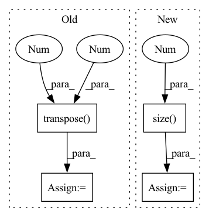

Pattern ID :30212
Before Change
x_mask = torch.logical_not(torch.isnan(x))
x_mask = torch.cummax(x_mask, -1)[1]
output = x.gather(-1, x_mask)
output = output.transpose(-2 , -1 ) // shape (n, s, c)
// Fill initial NaNs
if torch.sum(torch.isnan(output)) > 0:
assert fill is not None, "argument "fill" must be provided"After Change
assert len(input.size()) >= 2, "Tensor "input" must have at least two dimensions"
if select is None:
select = torch.arange(input.size(-1 ) )
// Last observation carried forward (all channels)
x = input.transpose(-2, -1) // shape (n, c, s)
x_mask = torch.logical_not(torch.isnan(x))In pattern: SUPERPATTERN
Frequency: 3
Non-data size: 4
Instances Fragment ID: 89666168
Project Name: philipdarke/torchtime
Commit Name: b2519cb539c86e8471c692d7a3f469396a389cf5
Time: 2022-07-06
Author: 43066442+philipdarke@users.noreply.github.com
File Name: src/torchtime/impute.py
M Class Name: AnonimousClass
N Class Name: AnonimousClass
M Method Name: forward_impute(3)
N Method Name: forward_impute(2)
M Parent Class:
N Parent Class:
M File Name: src/torchtime/impute.py
N File Name: src/torchtime/impute.py
M Start Line: 84
M End Line: 87
N Start Line: 63
N End Line: 107
Before Change
head_dim = embed_dim // (self.num_heads * 3)
// Transpose seq_len and num_heads dim
query_projected = query_projected.view(
batch_size, seq_len, 3 * self.num_heads, head_dim
).transpose(1 , 2 )
query, key, value = query_projected.chunk(3, 1)
// the output of sdp = (batch, num_heads, seq_len, head_dim)
attn, _ = torch.nn.functional._scaled_dot_product_attention(After Change
)
batch_size = query_projected.size(0)
embed_dim = query_projected.size(2 )
head_dim = embed_dim // (self.num_heads * 3)
query, key, value = query_projected.chunk(3, -1)
query = query.view(batch_size, -1, self.num_heads, head_dim).transpose(1, 2)
key = key.view(batch_size, -1, self.num_heads, head_dim).transpose(1, 2)
value = value.view(batch_size, -1, self.num_heads, head_dim).transpose(1, 2)
// the output of sdp = (batch, num_heads, seq_len, head_dim)
attn, _ = torch.nn.functional._scaled_dot_product_attention( Fragment ID: 89666169
Project Name: pytorch/pytorch
Commit Name: d06d569e90f3ca3e721b679be285385e5bd3eea9
Time: 2022-10-18
Author: drisspg@fb.com
File Name: benchmarks/transformer/sdp.py
M Class Name: CompositeMHA
N Class Name: CompositeMHA
M Method Name: forward(5)
N Method Name: forward(5)
M Parent Class: torch.nn.Module
N Parent Class: torch.nn.Module
M File Name: benchmarks/transformer/sdp.py
N File Name: benchmarks/transformer/sdp.py
M Start Line: 24
M End Line: 49
N Start Line: 26
N End Line: 52
Before Change
value_states = value_states.view(*proj_shape)
src_len = key_states.size(1)
attn_weights = torch.bmm(query_states, key_states.transpose(1 , 2 ) )
// q_t is [batch, seq_length, n_heads, dim_per_head]
import ipdb; ipdb.set_trace()After Change
proj_shape = (bsz * self.num_heads, -1, self.head_dim)
query_states = self._shape(query_states, tgt_len, bsz)
src_len = key_states.size(2 )
// compute scores
attn_weights = torch.matmul(
query_states, key_states.transpose(3, 2) Fragment ID: 89666171
Project Name: joaolages/ratransformers
Commit Name: 87d3c27f618c060b396039f71734d515d3343a4b
Time: 2022-02-11
Author: joaop.glages@gmail.com
File Name: src/ratransformers/bart.py
M Class Name: BartRelationalAttention
N Class Name: BartRelationalAttention
M Method Name: forward(7)
N Method Name: forward(7)
M Parent Class: BartAttention
N Parent Class: BartAttention
M File Name: src/ratransformers/bart.py
N File Name: src/ratransformers/bart.py
M Start Line: 43
M End Line: 138
N Start Line: 43
N End Line: 139